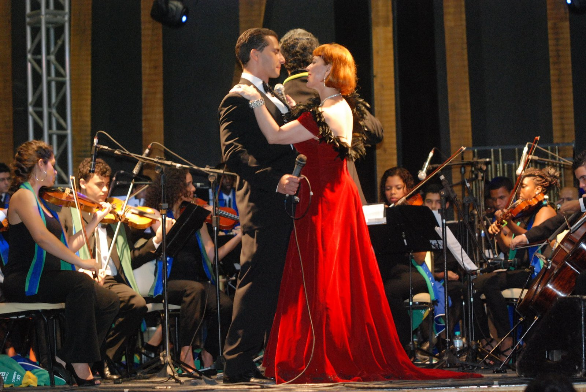

Concert
An emotional evening of great melodies spanning musical theater, opera, and classical crossover.
I want to attendAbout the concert
A close, elegant, and moving experience
This concert is born from the desire to sing repertoire that crosses generations and continues finding new meaning when experienced live. Alongside a pianist, with a guest soprano and, very likely, a violinist as well, the evening offers an intimate encounter between voice, word, and melody.
The audience will hear timeless songs from Broadway, musicals, opera, and popular classics, performed with piano accompaniment, special guests, and the atmosphere of intimate theater. More than a sequence of songs, the concert seeks to tell small stories: possible loves, farewells, dreams, memories, and moments when a melody seems to say what words alone cannot reach.
A new journey
The beginning of a new artistic phase
This project marks the beginning of a new phase in my career. After so many paths through opera, television, recordings, social media, and crossover repertoire, I feel this concert brings together, in a very truthful way, what moves me most: singing with emotion, telling stories, and being close to the audience.
The first performances will take place in Austria, a country that has been part of my musical life for many years. At the end of the year, in December, the concert will also be presented in Brazil, in a very special return to this repertoire before my Brazilian audience.
My hope is that, starting in 2027, this project will grow and become a tour through Brazil, bringing these songs to audiences in different cities. It is still a path being built, but it begins with sincerity, care, and a deep desire to share beauty.
Rehearsal
Preparing the concert at the piano
This video shows a simple rehearsal moment at the piano, preparing one of the songs that will be part of the concert.
Repertoire
Melodies that endure
The repertoire may vary with each performance, preserving the freedom of the moment and the encounter with each audience. Among the planned works are:
- Some Enchanted Evening South Pacific
- Empty Chairs at Empty Tables Les Misérables
- Stars Les Misérables
- If I Loved You Carousel
- Memory Cats
- The Impossible Dream Man of La Mancha
- This Is the Moment Jekyll & Hyde
- So In Love Kiss Me, Kate
- The Way You Look Tonight popular classic
Duets
- All I Ask of You The Phantom of the Opera
- Somewhere West Side Story
Many other beautiful songs may also be part of each performance.
Invitation
Experience this concert live
Some songs reveal their power in a special way when they happen in the same instant that we breathe together: artist, guests, and audience. This concert is an invitation to that encounter.